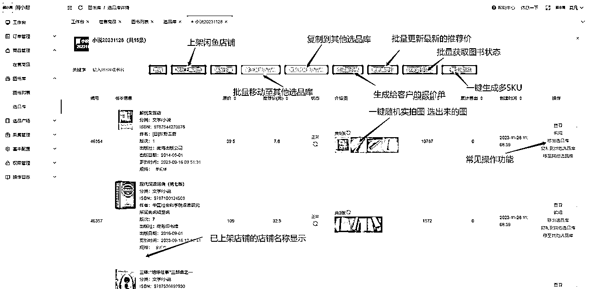

来源：https://nrsagciwti.feishu.cn/docx/KIIxdokwYoE4uax1Tk4ceTBxnlf
今天跟大家分享五个月精耕闲鱼二手书总结出的行之有效的几个选品方法，供大家参考！
可能会帮助到一些进入闲鱼二手书的圈友更快的拿到正反馈以坚定持续去做的信心，我个人通过这个方法拿到了一些正反馈。0
我通过下面分享的选品思路拿到一点结果如下，实现副业闭环，更欣慰的是通过二手书这个项目探索了一些电商选品及运营的思路并开发了一套系统，这对后期个人副业的发展奠定了一些基础能力。
约5个月，累计售出3000单+，销售额169112元，利润约44814.06元
（从7月10日拿到第一个单个订单利润47.21后找到了选品思路后利润基本都在20+）
下面是整理了一些比较有代表性的品，仅从分页中列举部分订单信息，我的平均客单在68元/单，利润基本在20元/单+（不包括刚开始做二手书上架的一些教材书籍，利润相对较低基本在三五块钱）。
中间省略一万张图......，下面这单是利润达到几十块的第一单，就是从这一单开启挖掘高客单的思考，进而走上了高客单的新征程
大部分人可能存在这样的问题：
①不知道如何选品；
②目前选品同质化（根据孔网累计销量排行）严重不太容易拿到正反馈；
③如何快速找到高客单品的方法；
下面我就将我日常选品的一些思考和方法分享给大家！
鉴于当下二手书入局操作的同行比较多，大家常用选品方式是根据孔网累计销量排行来选品，导致大家都很卷，卷到极致都是价格战，阶段选品的方法优势在于能够及时掌握到当下哪些品比较畅销，在当下畅销品种再去根据价格、细分品类等进行筛选过滤出自己想要做的品，比较容易拿到正反馈建立信心。
同行是最好的老师，前辈花了大量的时间去测试调整最终拿到了结果→好的销量→爆款，那参考前辈们的爆款直接抄作业是选品上的捷径，可以最大程度的减少我们的试错时间成本，且找到一些宝藏店进行复刻那真是美滋滋，采集一家500个品的店时间也就在半小时，然后根据想要量倒序排列找到排名靠前想要量比较高的品，一般通过这样方式找出来的高想要数的品满足以下几个条件：
①多图（各品类图片形式还不一样，多分析可以找到规律），
②多规格，
③强需求，
④标题详情描述优秀，
通过这种方式多采集几家店会发现，爆款的属性基本一致。
另外将①和②两个选品进行对比，能够更加准确地判断出一个高客单爆款。
以上是这次分享的高客单及通过数据差异化选品的思路
为了满足自己选品、快速上架及日常运营账号需求，加上自己本职工作跟程序开发相关，3个多月的时间搞了一套系统（闲小帮），任何商业的竞争最终就是效率的竞争，虽然闲鱼二手书是个副业的项目，目前入局的人数并不少，最终比拼的也是效率，想做好深耕闲鱼二手书跑赢一部分人一定离不开系统的加持。
（截止2023年11月27日）
图书信息：2568628条
孔网图书销售记录：19768856条（2023年7月后的销售数据）
孔网图书实拍图：5469360组（无水印图片、每组实拍图大于等于3张）
孔网图书封面图：84706480张（无水印图片）
孔网热搜关键词：2032251个
闲鱼二手书商品：57248个（约114个L3以上店铺的数据，每日增加中）
基于以上的数据沉淀，小帮除了常见的功能外,另外有这3点特别爽
可以自定义自己的
计价分页
计价基准价
加价系数
10元以下加价金额
快捷跳转孔网购买，一键同步收件人信息，孔网订单价格自动获取，自动发货等
批量调价，批量降价，批量加规格，回流选品库，批量下架删除，查看想要与浏览量走势
多个isbn批量搜索，一键计算推荐价，推荐图、实拍图快捷选择，孔网图片去水印功能等
选品库分类、选品库分享、移动、移除、复制至其他选品库功能、报价单、一键多SKU、批量计算推荐价

分类筛选，日期筛选，已上架店铺名展示
单个宝贝采集、店铺分页采集、一键采集
不说了不说了，又来单子了~~~
详细的内容大家移步看教程吧！(*^▽^*)